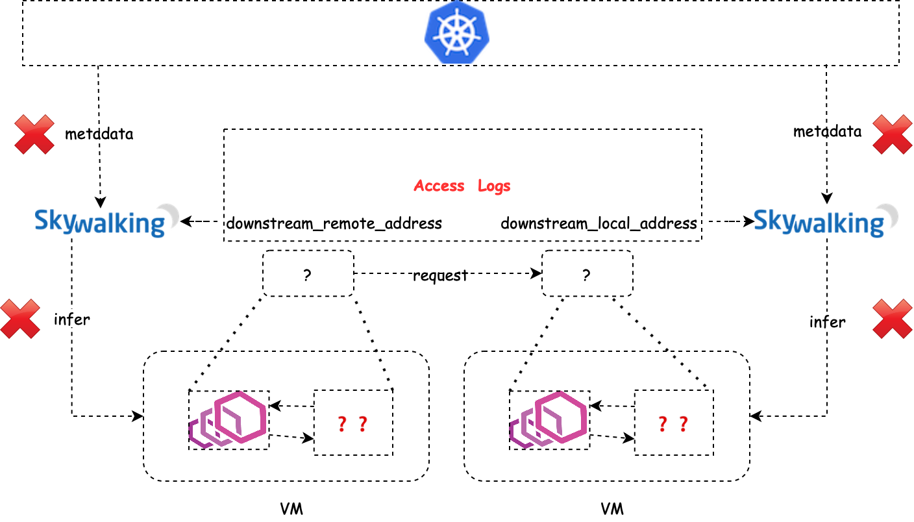
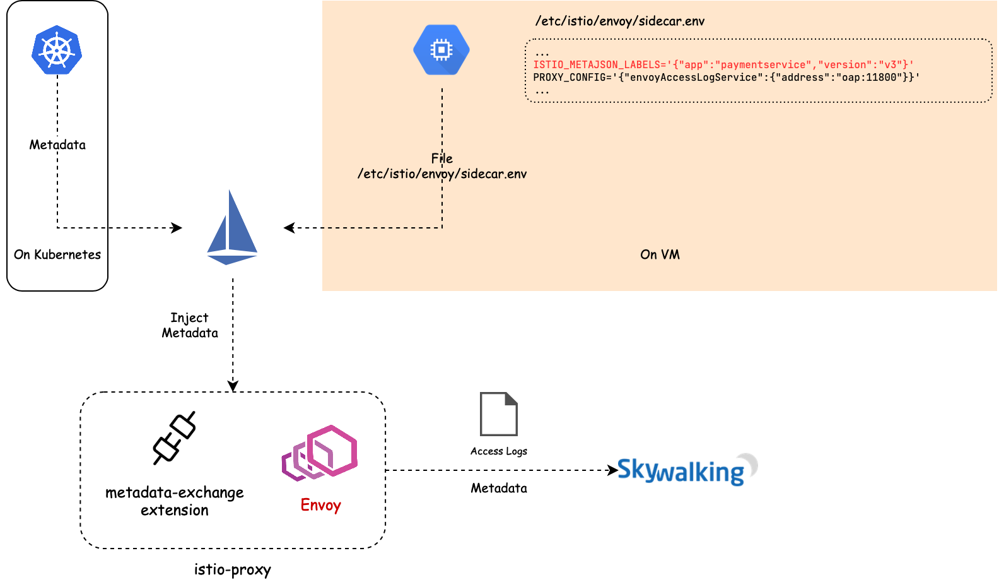
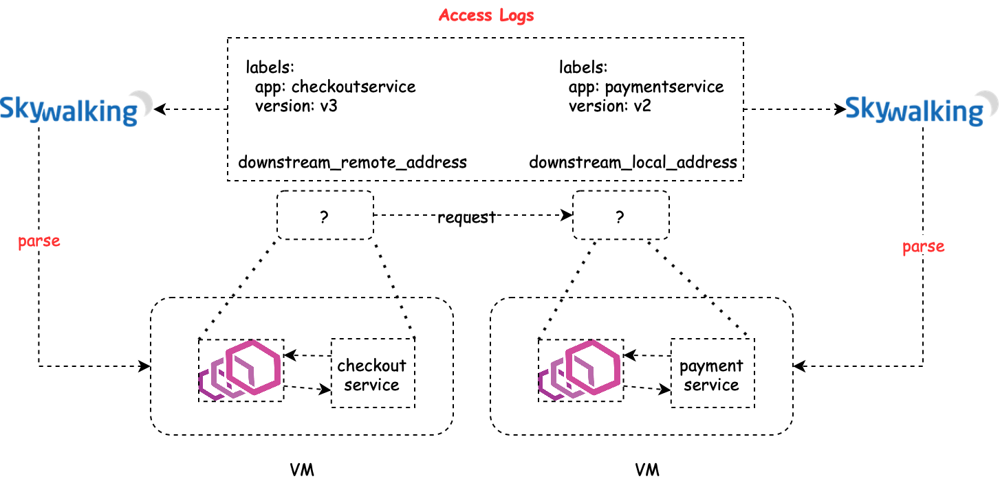
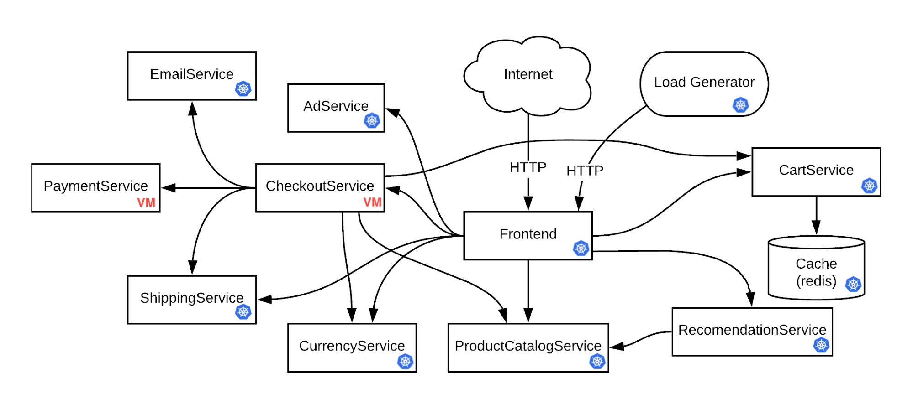
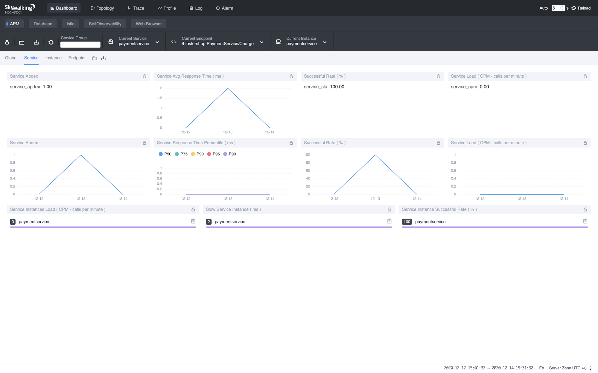

Observe VM Service Meshes with Apache SkyWalking and the Envoy Access Log Service

Origin: Observe VM Service Meshes with Apache SkyWalking and the Envoy Access Log Service - The New Stack
Apache SkyWalking: an APM (application performance monitor) system, especially designed for microservices, cloud native, and container-based (Docker, Kubernetes, Mesos) architectures.
Envoy Access Log Service: Access Log Service (ALS) is an Envoy extension that emits detailed access logs of all requests going through Envoy.
Background
In the previous post, we talked about the observability of service mesh under Kubernetes environment, and applied it to the bookinfo application in practice. We also mentioned that, in order to map the IP addresses into services, SkyWalking needs access to the service metadata from a Kubernetes cluster, which is not available for services deployed in virtual machines (VMs). In this post, we will introduce a new analyzer in SkyWalking that leverages Envoy’s metadata exchange mechanism to decouple with Kubernetes. The analyzer is designed to work in Kubernetes environments, VM environments, and hybrid environments. If there are virtual machines in your service mesh, you might want to try out this new analyzer for better observability, which we will demonstrate in this tutorial.
How it works
The mechanism of how the analyzer works is the same as what we discussed in the previous post. What makes VMs different from Kubernetes is that, for VM services, there are no places where we can fetch the metadata to map the IP addresses into services.

The basic idea we present in this article is to carry the metadata along with Envoy’s access logs, which is called metadata-exchange mechanism in Envoy. When Istio pilot-agent starts an Envoy proxy as a sidecar of a service, it collects the metadata of that service from the Kubernetes platform, or a file on the VM where that service is deployed, and injects the metadata into the bootstrap configuration of Envoy. Envoy will carry the metadata transparently when emitting access logs to the SkyWalking receiver.

But how does Envoy compose a piece of a complete access log that involves the client side and server side? When a
request goes out from Envoy, a plugin of istio-proxy named “metadata-exchange” injects the metadata into the http
headers (with a prefix like x-envoy-downstream-), and the metadata is propagated to the server side. The Envoy sidecar
of the server side receives the request and parses the headers into metadata, and puts the metadata into the access log,
keyed by wasm.downstream_peer. The server side Envoy also puts its own metadata into the access log keyed
by wasm.upstream_peer. Hence the two sides of a single request are completed.

With the metadata-exchange mechanism, we can use the metadata directly without any extra query.

Example
In this tutorial, we will use another demo application Online Boutique that consists of 10+ services so that we can deploy some of them in VMs and make them communicate with other services deployed in Kubernetes.

Topology of Online Boutique In order to cover as many cases as possible, we will deploy CheckoutService
and PaymentService on VM and all the other services on Kubernetes, so that we can cover the cases like Kubernetes →
VM (e.g. Frontend → CheckoutService), VM → Kubernetes (e.g. CheckoutService → ShippingService), and VM → VM (
e.g. CheckoutService → PaymentService).
NOTE: All the commands used in this tutorial are accessible on GitHub.
git clone https://github.com/SkyAPMTest/sw-als-vm-demo-scripts
cd sw-als-vm-demo-scripts
Make sure to init the gcloud SDK properly before moving on. Modify the GCP_PROJECT in file env.sh to your own
project name. Most of the other variables should be OK to work if you keep them intact. If you would like to
use ISTIO_VERSION >/= 1.8.0, please make sure this patch is included.
-
Prepare Kubernetes cluster and VM instances
00-create-cluster-and-vms.shcreates a new GKE cluster and 2 VM instances that will be used through the entire tutorial, and sets up some necessary firewall rules for them to communicate with each other. -
Install Istio and SkyWalking
01a-install-istio.shinstalls Istio Operator with specresources/vmintegration.yaml. In the YAML file, we enable themeshExpansionthat supports VM in mesh. We also enable the Envoy access log service and specify the addressskywalking-oap.istio-system.svc.cluster.local:11800to which Envoy emits the access logs.01b-install-skywalking.shinstalls Apache SkyWalking and sets the analyzer tomx-mesh. -
Create files to initialize the VM
02-create-files-to-transfer-to-vm.shcreates necessary files that will be used to initialize the VMs.03-copy-work-files-to-vm.shsecurely transfers the generated files to the VMs withgcloud scpcommand. Now use./ssh.sh checkoutserviceand./ssh.sh paymentserviceto log into the two VMs respectively, andcdto the~/workdirectory, execute./prep-checkoutservice.shoncheckoutserviceVM instance and./prep-paymentservice.shonpaymentserviceVM instance. The Istio sidecar should be installed and started properly. To verify that, usetail -f /var/logs/istio/istio.logto check the Istio logs. The output should be something like:2020-12-12T08:07:07.348329Z info sds resource:default new connection 2020-12-12T08:07:07.348401Z info sds Skipping waiting for gateway secret 2020-12-12T08:07:07.348401Z info sds Skipping waiting for gateway secret 2020-12-12T08:07:07.568676Z info cache Root cert has changed, start rotating root cert for SDS clients 2020-12-12T08:07:07.568718Z info cache GenerateSecret default 2020-12-12T08:07:07.569398Z info sds resource:default pushed key/cert pair to proxy 2020-12-12T08:07:07.949156Z info cache Loaded root cert from certificate ROOTCA 2020-12-12T08:07:07.949348Z info sds resource:ROOTCA pushed root cert to proxy 2020-12-12T20:12:07.384782Z info sds resource:default pushed key/cert pair to proxy 2020-12-12T20:12:07.384832Z info sds Dynamic push for secret defaultThe dnsmasq configuration
address=/.svc.cluster.local/{ISTIO_SERVICE_IP_STUB}also resolves the domain names ended with.svc.cluster.localto Istio service IP, so that you are able to access the Kubernetes services in the VM by fully qualified domain name (FQDN) such ashttpbin.default.svc.cluster.local. -
Deploy demo application Because we want to deploy
CheckoutServiceandPaymentServicemanually on VM,resources/google-demo.yamlremoves the two services from the original YAML .04a-deploy-demo-app.shdeploys the other services on Kubernetes. Then log into the 2 VMs, run~/work/deploy-checkoutservice.shand~/work/deploy-paymentservice.shrespectively to deployCheckoutServiceandPaymentService. -
Register VMs to Istio Services on VMs can access the services on Kubernetes by FQDN, but that’s not the case when the Kubernetes services want to talk to the VM services. The mesh has no idea where to forward the requests such as
checkoutservice.default.svc.cluster.localbecausecheckoutserviceis isolated in the VM. Therefore, we need to register the services to the mesh.04b-register-vm-with-istio.shregisters the VM services to the mesh by creating a “dummy” service without running Pods, and aWorkloadEntryto bridge the “dummy” service with the VM service.
Done!
The demo application contains a load generator service that performs requests repeatedly. We only need to wait a few
seconds, and then open the SkyWalking web UI to check the results.
export POD_NAME=$(kubectl get pods --namespace istio-system -l "app=skywalking,release=skywalking,component=ui" -o jsonpath="{.items[0].metadata.name}")
echo "Visit http://127.0.0.1:8080 to use your application"
kubectl port-forward $POD_NAME 8080:8080 --namespace istio-system
Navigate the browser to http://localhost:8080 . The metrics, topology should be there.



Troubleshooting
If you face any trouble when walking through the steps, here are some common problems and possible solutions:
-
VM service cannot access Kubernetes services? It’s likely the DNS on the VM doesn’t correctly resolve the fully qualified domain names. Try to verify that with
nslookup istiod.istio-system.svc.cluster.local. If it doesn’t resolve to the Kubernetes CIDR address, recheck the step inprep-checkoutservice.shandprep-paymentservice.sh. If the DNS works correctly, try to verify that Envoy has fetched the upstream clusters from the control plane withcurl http://localhost:15000/clusters. If it doesn’t contain the target service, recheckprep-checkoutservice.sh. -
Services are normal but nothing on SkyWalking WebUI? Check the SkyWalking OAP logs via
kubectl -n istio-system logs -f $(kubectl get pod -A -l "app=skywalking,release=skywalking,component=oap" -o name)and WebUI logs viakubectl -n istio-system logs -f $(kubectl get pod -A -l "app=skywalking,release=skywalking,component=ui" -o name)to see whether there are any error logs . Also, make sure the time zone at the bottom-right of the browser is set toUTC +0.